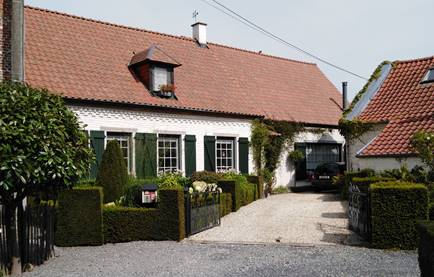
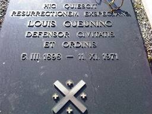
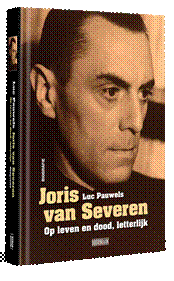
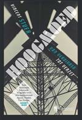

> nieuwsbrief > 2021- nr 4
Inhoud
Mededelingen
Het Jaarboek
2021, inclusief het Register over de jaarboeken 1
t.e.m. 25 kan nog nabesteld worden voor de ledenprijs van 29 ,
over te boeken op rekening BE71 0001 7058 1469 t.n.v. Studiecentrum
Joris van Severen, Paddevijverstraat 2, 8900 Ieper, met de
vermelding bijdrage 2021.
Namenregister over
de jaarboeken 1 - 25
 Naast de uitgave van
het 25e Jaarboek Joris van Severen realiseerden we
voor 2021 ook de uitgave van een uitgebreid Register (120 paginas) van
alle persoonsnamen die in de jaarboekenreeks 1 tot en met 25
terug te vinden zijn. Dit Register wordt zonder
meerprijs - als bijlage bij het Jaarboek 25 (2021) aan alle
leden toegestuurd. Naderhand eens het Jaarboek 25 (2021)
verschenen is zullen we voor dit Register een (nog te
bepalen) kostprijs dienen aan te rekenen. Het is dus zaak er
tijdig bij te zijn, m.a.w. de ledenbijdrage zo spoedig alsnog te
vereffenen.
Naast de uitgave van
het 25e Jaarboek Joris van Severen realiseerden we
voor 2021 ook de uitgave van een uitgebreid Register (120 paginas) van
alle persoonsnamen die in de jaarboekenreeks 1 tot en met 25
terug te vinden zijn. Dit Register wordt zonder
meerprijs - als bijlage bij het Jaarboek 25 (2021) aan alle
leden toegestuurd. Naderhand eens het Jaarboek 25 (2021)
verschenen is zullen we voor dit Register een (nog te
bepalen) kostprijs dienen aan te rekenen. Het is dus zaak er
tijdig bij te zijn, m.a.w. de ledenbijdrage zo spoedig alsnog te
vereffenen.
Nieuwe biografie van Joris van
Severen
De nieuwe biografie Joris van Severen op leven en dood,
letterlijk, van de hand van Luc Pauwels, is
ondertussen verschenen en werd medio augustus door Uitgeverij
Doorbraak toegestuurd aan wie er via ons Studiecentrum op
intekende. Wie verzuimde in te tekenen kan deze lijvige studie
(528 pp. + XVI pp. kleurkatern) uiteraard nog rechtstreeks bij
de Uitgeverij Doorbraak of via de boekhandel (ISBN 978
94-92639-56-1) bestellen voor de prijs thans 39,99 .
Louis Gueuning niet vergeten
Het is
sinds vele jaren de gewoonte dat enkele van onze vrienden een
bezoek brengen aan het graf van Louis Gueuning in Mainvault, een
klein dorpje aan de rand van wat genoemd wordt Le Pays des
collines, in werkelijkheid de voortzetting van de z.g. Vlaamse
Ardennen. Laten we zeggen: Vlaamse Ardennen aan de andere
kant van de taalgrens, in zoverre er van grens kan gesproken
worden, want in feite vloeit het gebruik van de Nederlandse of
Franse taal er geleidelijk in elkaar over.

De landelijke woonst (huidige toestand) van
Louis Gueuning te Mainvault
Het is
een oude streek, ook wel eens Picardisch Wallonië genoemd,
waar de herinneringen aan de Romeinse tijd nog zeer talrijk
zijn. Aan de kerk vindt de bezoeker daarover trouwens
uitstekende informatie op drie sierlijke borden.
Het is
in dit dorpje dat L. Gueuning de laatste jaren van zijn leven
heeft doorgebracht. Hij woonde er in een pittoresk huisje, de
voormalige woning van de dorpssmid.
Tot zo
ver iets over Mainvault. Waar we onze lezers echter wilden aan
herinneren is aan dat jaarlijks bezoek, rond de sterfdatum van
L. Gueuning op 11 november 1971, dit jaar dus precies dertig
jaar geleden, en waar hij op het dorpskerkhof op 15 november
onder grote belangstelling ten grave werd gedragen. De dag die
ook de feestdag is van Leopold en die dus meteen ook herinnert
aan koning Leopold III, de vorst die Gueuning bij leven zo trouw
gediend heeft.
Jammer
genoeg werd deze traditie, zoals zoveel, door de corona
onderbroken, en dit al sinds een tweetal jaren, zoals onze
lezers weten. In de loop van de maand augustus vond een van onze
vrienden dat dit niet langer kon en heeft op eigen initiatief op
11 augustus een bezoek aan het graf gebracht en er in ons aller
naam een bloemstuk neergelegd.
Wij
delen u dit graag mee en hopen meteen dat in het najaar deze
traditie hernomen kan worden.

De grafsteen van Louis Gueuning op het
kerkhof van Mainvault, met het Bourgondisch Kruis en de vier
kruisjes, de kardinale deugden verbeeldend.
Uitgespuwd door de partijpolitiek,
bemind binnenskamers.
Joris van Severen (1894-1940) is
een politicus die blijft fascineren
Het boek Joris
van Severen Op leven en dood, letterlijk van
historicus Luc Pauwels tevens ook voorzitter van ons
Studiecentrum - werd door de uitgever met enige voortvarendheid
aangekondigd als de ultieme biografie van een politicus
die voor velen tot de verbeelding blijft spreken.
Dat bewijst wel zijn vertrouwen in
de auteur, dat inderdaad niet beschaamd werd. Een blik op de
inhoudstafel volstaat daartoe:
INHOUD:
Inleiding
DEEL I:
De jonge Joris van Severen
Het gezin Van Severen in Wakken
// College, flamingantisme, universiteit // Oorlog en
frontervaring // Bevrijdt zich niet van de oorlog wie wil // De
linkse Joris van Severen // Lust en liefde // Intellectueel
actief, Vlaamse inzet // Cultureel actief, Ter Waarheid //
Partijpolitiek actief in het parlement //
DEEL II:
De Dinaso Joris van Severen
Het nationalisme heeft nood aan
een doctrine // Tegen de ideologie van de Franse Revolutie, voor
een organische samenleving // Van solidarisme naar
nationaalsolidarisme // Hier het Verdinaso! // De nieuwe
marsrichting // Dietsland, de Nederlanden // Het paradigma van
1830 // Machtsverwerving, maar niet met geweld // Orde en
aristocratie
DEEL
III: De rijpere Joris van Severen
Oorlog op komst // Mag ik u
voorstellen
// Joris van Severen en Winston Churchill waren
geen fascisten // Vermoord in Abbeville. Het verraad van de
Belgische staat //. De epiloog van het Verdinaso // Synthese van
de ideologische evolutie van Joris van Severen // Toetsing van
vroegere verklaringsmodellen // De Conservatieve Revolutie als
mogelijk verklaringsmodel // Joris van Severen in het brede,
Europese perspectief // De erfenis van Joris van Severen
Het werk is niet enkel een loutere
beschrijving van leven, streven en werkzaamheid van de
geportretteerde geworden, maar licht deze ook via tal van aparte
themahoofdstukken uitgebreid toe. En dit getrouw naar het maxime
van Leopold von Ranke die objectiviteit in de geschiedschrijving
omschreef als het weergeven ervan wie es eigentlich gewesen
ist. Dit wil onder andere zeggen met inachtneming van de
tijdsgeest en de mores die, in dit geval, eigen waren aan de
jaren van het interbellum.
In dit perspectief wordt ook
uitgebreid ingegaan op het maatschappelijk project van Van
Severens beweging, met name het solidarisme. Naast de
hereniging van alle Nederlanden in een staatsverband, ijverde ze
voor een nieuwe sociale orde, afgeleid van de christelijke
sociale leer uit de encyclieken Rerum Novarum en Quadragesimo
Anno. Het verstarde partijpolitieke regime verafschuwde
hem, maar binnenskamers spraken veel lucide geesten vaak met
diep respect over hem.
Van Severen zat op één lijn met
koning Leopold III en wilde ons land buiten een volgende
wereldoorlog houden. Op 10 mei 1940 de inval van de Duitsers
werd hij meteen aangehouden door de Staatsveiligheid. We kennen
de tragische afloop: wederrechtelijk overgeleverd aan de Franse
militaire overheid werd hij op 20 mei te Abbeville vermoord.
Een tragisch leven geschetst in
een nieuw licht. De auteur en historicus Luc Pauwels brengt
daarmee de huidige stand van het onderzoek samen in een nieuwe synthese, waartoe de
tot nog toe verschenen 25 Jaarboeken Joris van Severen niet
weinig onontgonnen bronnenmateriaal aanleverde. Het werk leest
als een roman.
Is met deze biografie alles gezegd
over de persoonlijkheid van Joris van Severen? Een mensenleven
omvat vele facetten en ongetwijfeld kunnen andere, nog
onontgonnen invalshoeken aanvullende inzichten bieden. Maar vast
staat wel dat toekomstige biografen zeer beslagen ten ijs zullen
moeten komen om deze biografie in de schaduw te stellen.
_______________________
N.a.v. Luc Pauwels, Joris
van Severen, Op leven en dood, letterlijk, Uitgeverij
Doorbraak, 532 p. + XVI p. kleurkatern, geb., 39,99 .
Bron: https://boeken.doorbraak.be/p/joris-van-severen-luc-pauwels/?utm_source=newsletter-3491&utm_medium=email&utm_campaign=doorbraak+boekennieuws
Frantz
van Dorpe, het Verdinaso en het Verzet
Maurits Cailliau
In
het vorig nummer van onze Nieuwsbrief Joris van Severen
kon men de recensie van Luc Pauwels lezen over het door ons
sterk aanbevolen werk van Jan Creve getiteld Frantz van
Dorpe en het Verdinaso.
Amper
een paar weken later verscheen bij de uitgeverij Borgerhoff
& Lamberigts een tweede titel over dezelfde
Verdinaso-voorman, die in latere jaren burgemeester van
Sint-Niklaas werd. Auteur van deze als literaire non-fictie
opgevatte studie is Vincent Stuers, een leeftijdsgenoot van de
kleinkinderen van Frantz van Dorpe (1906-1990) en met hen
bevriend. Stuers beslist lezenswaardige boek draagt op de kaft
een titel met scharnieren: Hoogmoed. Van Verdinaso tot
Verzet. Een zeldzaam boeiende biografie over een fascinerende
figuur, Frantz van Dorpe. Het laatste lid van het
scharnier behelst de appreciatie van Stuers werk door Geert Mak.
Beide auteurs Jan Creve en Vincent Stuers waren overigens
sprekers op een Studiedag over Van Dorpe die op 12 juni ll. in
Sint-Niklaas gehouden werd.
Het
blijkt op het eerste zicht nogal merkwaardig dat vlak na elkaar
twee studies over dezelfde figuur verschijnen. Zij het dan ook
dat ze elkaar slechts gedeeltelijk overlappen maar elkaar ook
aanvullen. Waar Creve zich beperkte tot de belangrijke rol die
Van Dorpe gespeeld heeft binnen het Verdinaso, trekt Stuer de
lijn door naar diens rol binnen het Verzet Van Dorpe werd
aanvang 1941 door de op collaboratie aansturende vleugel van het
Verdinaso geroyeerd - tijdens de Tweede Wereldoorlog, de
Koningskwestie die erop volgde en zijn partijpolitiek engagement
in de naoorlogse jaren. Beslist boeiende lectuur allemaal, die
we graag aanbevelen.
____________________